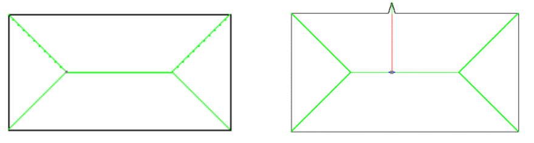
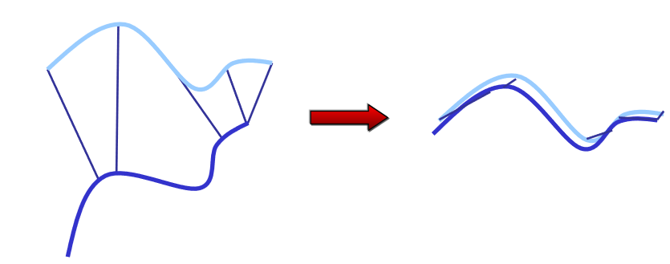

Disadvantages:
• Doesn’t scale well in higher dimensions
Each cell contains either:
unknown/unexplored (grey)
probability of occupation
Quadtrees
Each node represents a square. If the node is fully empty or fully occupied it has no children.
If it is partially occupied it has four children. Subdivision stops after some minimal square size.
Octrees
Each node represents a cube. If the node is fully empty or fully occupied it has no children.
If it is partially occupied it has eight children. Subdivision stops after some minimal cube size.
Octrees
Problem 1: quadtrees and octrees are not balanced trees. So, in the worst case an occupancy query could be O(n) in the number of nodes.
Each node represents a cube. If the node is fully empty or fully occupied it has no children.
If it is partially occupied it has eight children. Subdivision stops after some minimal cube size.
Octrees
Problem 1: quadtrees and octrees are not balanced trees. So, in the worst case an occupancy query could be O(n) in the number of nodes.
Problem 2: quadtrees and octrees are sensitive to small changes in the location of obstacles.
Each node represents a cube. If the node is fully empty or fully occupied it has no children.
If it is partially occupied it has eight children. Subdivision stops after some minimal cube size.
Octree Example: Octomap
Open source as a ROS package
Implicit Surface Definitions: Signed Distance Function
This distance function
is defined over any point
in 3D space.
SDF Example
Pointclouds
Pointclouds
Advantages:
can make local changes to the map without affecting the pointcloud globally
can align pointclouds
nearest neighbor queries are easy with kd-trees or locality-sensitive hashing
Disadvantages:
need to segment objects in the map
raytracing is approximate and nontrivial
Topological Maps
Topology: study of spatial properties that are preserved under continuous deformations of the space.
Generalized Voronoi Graph (GVG)
Deformation Retraction: GVG in Plane
\(\qquad\qquad\quad\) GVG nodes: points that are equidistant to 3 or more obstacle points
Retractions are
also called
roadmaps.
Roadmap: Voronoi diagrams
GVG is formed by paths equidistant from the two closest objects
maximizing the clearance between the obstacles.
This generates a very safe roadmap which avoids obstacles as much as possible
Generalized Voronoi Graphs (GVG)
Turns comparison between pixels to comparison between graphs.
GVG: sensitivity

The skeleton is sensitive to small changes in the object’s boundary.
GVG: advantages
Can specify whether we pass on the “left” or “right” of each obstacle
on our way to the goal.
GVG: advantages
How a curve winds around an obstacle
Note: winding angle of a path
can be more than 360 degrees
Homotopy classes
Two paths with the same endpoints are homotopic or belong to the same homotopy class iff one can be deformed continuously (without hitting obstacles) into the other. Formally, the paths:
Two paths with the same endpoints are homotopic or belong to the same homotopy class iff one can be deformed continuously (without hitting obstacles) into the other. Formally, the paths:
Edges: rotations and
translations between
local maps, but also topological
connectivity
Main advantage:
allows us combine accurate local
maps into a global, typically inconsistent map that nevertheless
provides sufficient navigation information.
Maps of Raw Observations
Main Idea
Map = entire (unprocessed) sequence of observations, e.g. video.
Do not try to support distance, collision, and raytracing queries.
Instead, provide only a similarity/nearest neighbors query
“Find the image in the video that is most similar to the one I’m seeing now.”
History of observations determines a (set of) location(s) in the map
Metric Map Alignment
a.k.a. scan matching, a.k.a. iterative closest point (ICP), a.k.a. registration
Problem definition
Given
two pointclouds or
a (local) laser scan and a pointcloud (global map) or
two maps
find the rotation and translation that aligns them
Assumption: We are assuming in these slides for simplicity that that rigid-body transformations are sufficient to align the scans. They might not be. We might need to also model scaling, non-uniform stretching and other nonlinear transformations.
Scan alignment with known correspondences
If the correct correspondences are known, the correct relative rotation/translation can be calculated in closed form.
When correct correspondences
are known we say that data association is known/unambiguous.
In general, data association is a real
and hairy problem in robotics.
Scan alignment with known correspondences
Find the 3D rotation matrix R and the 3D translation vector t that will best align the corresponding points
If you’re interested, the proof of the closed-form solution can be found in:
K. S. Arun, T. S. Huang, and S. D. Blostein. Least square fitting of two 3-d point sets.
IEEE Transactions on Pattern Analysis and Machine Intelligence, 9(5):698 – 700, 1987
Scan alignment with unknown correspondences
If correct correspondences are not known, it is generally impossible to determine the optimal relative rotation/ translation in one step

Scan alignment with unknown correspondences
Main idea for data association:
associate each point in the source scan to its nearest neighbor in the target scan
Find optimal rotation and translation for this correspondence.
Repeat until no significant drop in error.
libpointmatcher
Today’s agenda
How to represent maps
Probabilistic occupancy grid mapping
What we want to do
Terminology
Pose: the rotation and translation of a robot
Odometry: the transformation of the body frame with respect to its initial pose (fixed frame of reference).
\[_{B_{t}}^{B_0}T\]
Dynamics model: what is the next state given current state and control?
\[
x_{t+1} = f(x_t, u_t)
\]
Sensor measurement model: what is the expected measurement given the robot’s current state?
width = #columns
height = #rows
of the occupancy grid
The path of the robot up to time t is a sequence of random variables \(\mathbf{x}_{1:t} = \mathbf{x}_1, . . ., \mathbf{x}_t\) with \(\mathbf{x}_i = (x_i, y_i, \theta_i)\)
Odometry coordinates
At each time step the robot makes a measurement (sonar/laser). Measurements up to time t are a sequence of random variables \(\mathbf{z}_{1:t} = \mathbf{z}_1, . . ., \mathbf{z}_t\) with \(\mathbf{z}_i = {(r_i, \psi_i)}^K\)
K = #beams, or #points in the scan
(range, angle) in
the laser’s local
coordinates
The goal of mapping
To estimate the probability of any map, given path and measurements
This is intractable. E.g. for a 100 x 100 grid there are \(2^{1000}\) possible binary maps.
We can approximate \[p(\mathbf{m}|\mathbf{z}_{1:t}, \mathbf{x}_{1:t}) \simeq \prod_{i,j} p(m_{ij} | \mathbf{z}_{1:t}, \mathbf{x}_{1:t})\]
Approximation ignores all dependencies
between map cells, given known info.
Assumes (for tractability) that cells are
independent given path and measurements
Why is it an approximation?
Scenario
Nearby
measurements
Resulting map when
considering cells
independently
Resulting map when
considering cells
jointly
Evaluating the occupancy of a map cell
How do we evaluate \(p(m_{ij} = 1 | \mathbf{z}_{1:t}, \mathbf{x}_{1:t})\) ?
So, as long as we can evaluate
the log odds ratio for the
measurement likelihood: \(\color{black}\log \frac{p(\mathbf{z}_t | \mathbf{x}_t, m_{ij} = 1)}{p(\mathbf{z}_t | \mathbf{x}_t, m_{ij} = 0)}\)
we can do the belief update.
Log-odds ratio for the measurement likelihood
We want to compute \(\log \frac{p(\mathbf{z}_t | \mathbf{x}_t, m_{ij} = 1)}{p(\mathbf{z}_t | \mathbf{x}_t, m_{ij} = 0)}\) to do the belief update
Given map cell \((i, j)\) , the robot’s state \(\mathbf{x} = (x, y, \theta)\), and beams \(\mathbf{z} = {(r_k, \psi_k)}\)
Find index k of sensor beam that is closest in heading to the cell \((i,j)\)
If the cell \((i, j)\) is sufficiently farther than \(r_k\) or out of the field of view // We don’t have enough information to decide whether cell is occupied
Return prior occupation probability \(p(m_{ij} = 1)\)
If the cell \((i, j)\) is nearly as far as the measurement \(r_k\) // Cell is most likely occupied
Return \(p_{\text{occupied}}\) that is well above 0.5
If the cell \((i, j)\) is sufficiently closer than \(r_k\) // Cell is most likely free
Return \(p_{\text{occupied}}\) that is well below 0.5
inverse_sensor_measurement_model(\((i,j), \mathbf{x} = (x, y, \theta), \mathbf{z} = \{(r_k, \psi_k)\}\))
From Probabilistic Robotics, chapter 9.2
Let \((x_i, y_i)\) be the center of the cell \((i, j)\)
Let \(r = \|(x_i, y_i) - (x, y)\|\)
Let \(\phi = \operatorname{atan2}(y_i - y, x_i - x) - \theta\) // Might need to ensure this angle difference is in \([-\pi, \pi]\)
The index of the closest-in-heading beam to \((x_i, y_i)\) is \(k^* = \mathbf{\operatorname*{argmin}_{k}\left|\phi - \psi_{k}\right|}\)
If \(r > \min\{r_{\max}, r_k + \alpha/2\}\) or \(|\phi - \psi_k| > \beta/2\)
Return the log odds ratio of the prior occupancy \(\log \frac{p(m_{ij}=1)}{p(m_{ij}=0)}\)
If \(r_k < r_{\max}\) and \(|r - r_k| < \alpha/2\)
Return the log odds ratio of being occupied (corresponding to occupation probability > 0.5)
If \(r \le r_k\)
Return the log odds ratio of being free (corresponding to occupation probability < 0.5)
Recap
We wanted to compute the likelihood of any map based on known states and observations
To evaluate \(p(m_{ij} = 1|\mathbf{z}_{1:t}, \mathbf{x}_{1:t}) = \text{belief}_t(m_{ij} = 1)\) we had to apply Bayes’ theorem, which revealed a way to recursively update the belief
To evaluate \(p(m_{ij} = 1|\mathbf{z}_{1:t}, \mathbf{x}_{1:t}) = \text{belief}_t(m_{ij} = 1)\) we had to apply Bayes’ theorem, which revealed a way to recursively update the belief
Computing the forward measurement model \(p(\mathbf{z}_{t}|\mathbf{x}_{t}, m_{ij}=1)\) was hard, so we applied Bayes’ rule again, to get an inverse measurement model \(p(m_{ij}=1|\mathbf{z}_t, \mathbf{x}_t)\) and an easier-to-compute log-odds ratio:
Upon reception of a new laser/sonar/scan measurement \(\mathbf{z}_t = \{(r_k, \psi_k)\}\)
Let the robot’s current state be \(\mathbf{x}_t = (x_t, y_t, \theta_t)\)
Let the previous log-odds ratio of the occupancy belief be the 2D array \(l_{t}^{(ij)}\) where i is a row, j is a column
In the beginning we set the prior \(l_{0}^{(ij)}=\log\frac{p(m_{ij}=1)}{p(m_{ij}=0)}\) where the occupancy probability is a design decision.
For all cells (i,j) in the grid
If the cell (i,j) is in the field of view of the robot’s sensor at state \(\qquad \mathbf{x}_t\)\[l_t^{(ij)} = _{t-1}^{(ij)} + \text{inverse-sensor-measurement-model}((i,j), \mathbf{x}_t, \mathbf{z}_t) - l_0^{(ij)}\]
Else \(\qquad l_{t}^{(ij)} = l_{t-1}^{(ij)}\)
If asked, return the following 2D matrix of occupancy probabilities: \(\qquad \text{belief}_t(m_{ij} = 1) = 1 - \frac{1}{1 + \exp(l_t^{(ij)})}\)
Results
The maximum likelihood map is obtained by clipping the occupancy grid map at a threshold of 0.5